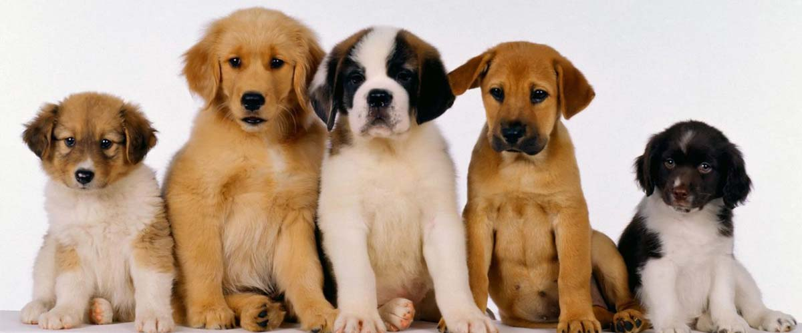
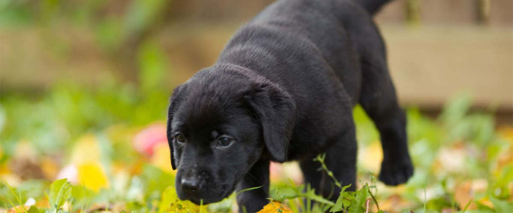
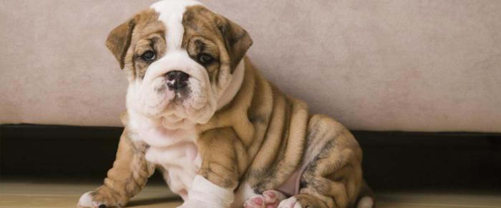
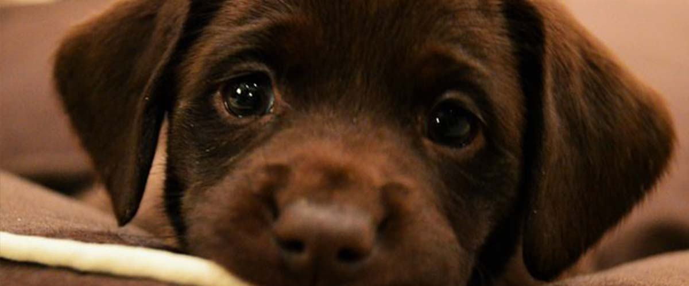
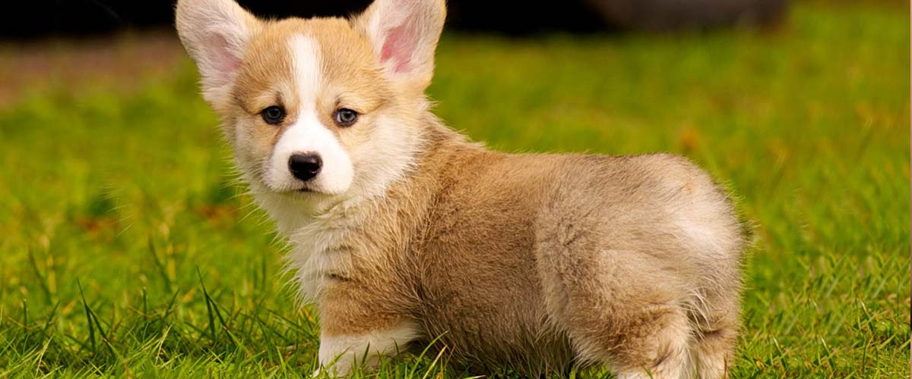
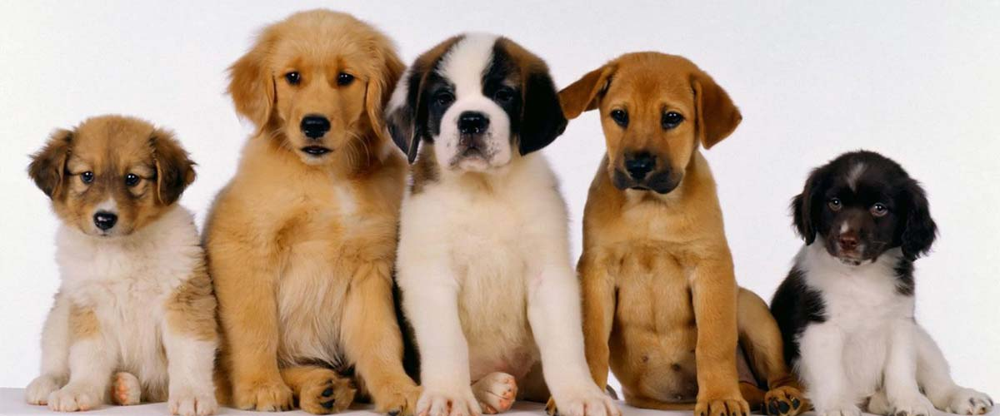
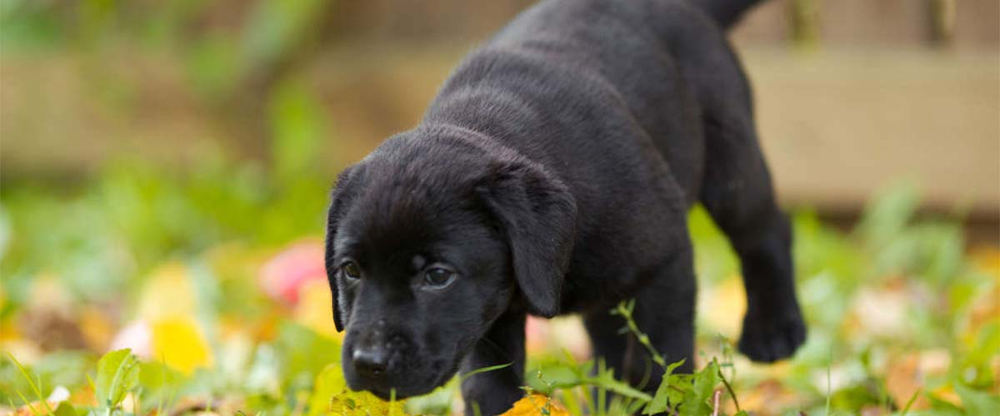
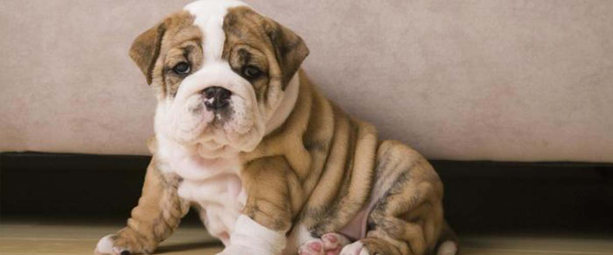
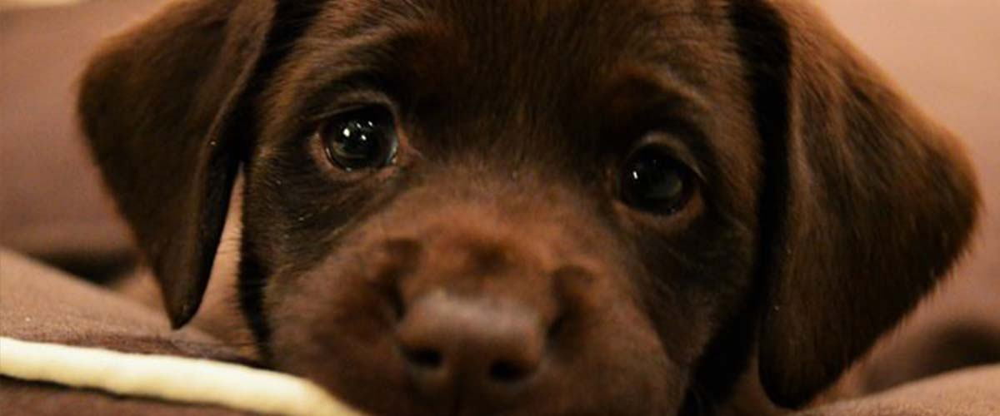
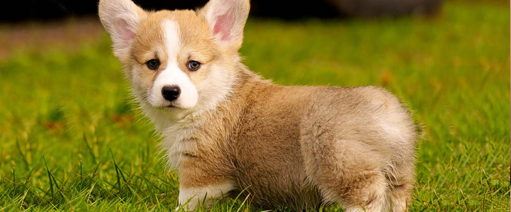

Puppy
A puppy is a juvenile dog. Some puppies can weigh 1–3 lb (0.45–1.36 kg), while larger ones can weigh up to 15–23 lb (6.8–10.4 kg).
All healthy puppies grow quickly after birth. A puppy's coat color may change as the puppy grows older, as is commonly seen in breeds such as the Yorkshire Terrier.
In vernacular English, puppy refers specifically to dogs, while pup may often be used for other mammals such as seals, giraffes, guinea pigs, or even rats.

Newborn puppies spend about 90 percent of their first week sleeping.
Puppies follow a sleep schedule similar to that of a newborn human.
The average human newborn sleeps 16 hours in a 24-hour time period.
Newborn puppies need about 14 hours of sleep in the same period.
A dog’s nose print is one of a kind, very similar to a person’s fingerprint.
The average body temperature for a dog is 101.2
With an average lifespan of just over 11 years, the typical dog costs $13,500The only sweat glands a dog has are between its toes.
Dogs have twice as many ear muscles as people.